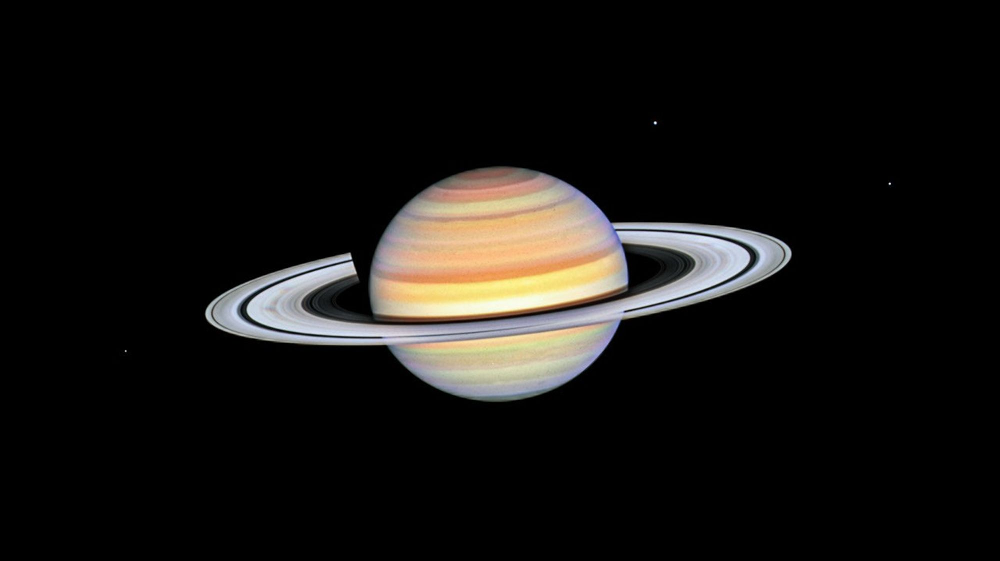

Welcome to Saturn's Portfolio

About Saturn
Saturn is the sixth planet from the Sun and the second-largest planet in our solar system. A gas giant primarily composed of hydrogen and helium, it is most famous for its spectacular, complex ring system made of billions of ice and rock particles.
Saturn’s rings are what truly make it the "jewel of the solar system".
Saturn is a huge planet in space. It is the sixth planet from the Sun. This planet is famous for its bright rings. The rings are made of ice and rock. Saturn is mostly made of gas. It does not have a solid ground. You cannot stand on this planet. It is the second largest planet in the solar system. Saturn spins very fast on its axis. One day there lasts only about eleven hours. A year on Saturn lasts nearly thirty Earth years.
Saturn has more than 140 known moons, making it one of the most moon-rich planets in the solar system. These moons vary greatly in size, shape, and composition. Some are tiny icy objects while others are large enough to have atmospheres and complex geological features.
Titan is Saturn's largest moon and the second-largest moon in the solar system. Titan is even larger than the planet Mercury. It possesses a thick atmosphere mainly composed of nitrogen and is the only moon known to have stable lakes and seas on its surface. These lakes are made of liquid methane and ethane instead of water.
Enceladus is one of the most fascinating moons orbiting Saturn. Beneath its icy surface lies a global ocean of liquid water. Powerful geysers near its south pole shoot water vapor, ice particles, and organic compounds into space. Because of this, Enceladus is considered one of the best places in the solar system to search for possible extraterrestrial life.
Rhea is Saturn's second-largest moon. It is composed mainly of water ice and has a heavily cratered surface. Scientists study Rhea to better understand the history and evolution of Saturn's moon system.
Iapetus is known for its unusual appearance. One hemisphere is very dark while the other is extremely bright, creating a striking two-tone effect. This unique feature makes Iapetus one of the most recognizable moons in the solar system.
Dione is another important moon of Saturn. It contains bright icy cliffs, large impact craters, and long fractures across its surface. Evidence suggests that Dione may once have experienced internal geological activity.
Mimas is famous for its enormous Herschel Crater. The crater is so large compared to the moon itself that Mimas resembles the fictional Death Star seen in popular science-fiction films.
Tethys is composed mostly of water ice and contains one of the largest canyons in the solar system, known as Ithaca Chasma. This immense valley stretches for thousands of kilometers across the moon's surface.
Saturn's moons continue to be studied by scientists because they offer clues about planetary formation, the history of the solar system, and the possibility of environments capable of supporting life beyond Earth.
Following list includes names of all the planets in our solar system in order from the Sun:
- Mercury
- Venus
- Earth
- Mars
- Jupiter
- Saturn
- Uranus
- Neptune
Following list includes names of some of the most important and well-known moons of Saturn:
- Titan
- Enceladus
- Rhea
- Iapetus
- Dione
- Mimas
- Tethys